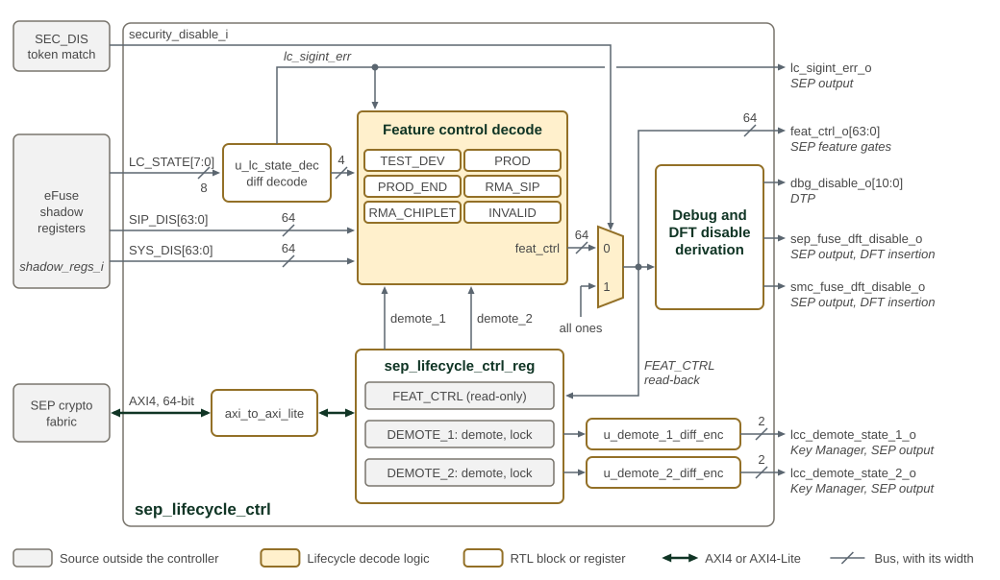
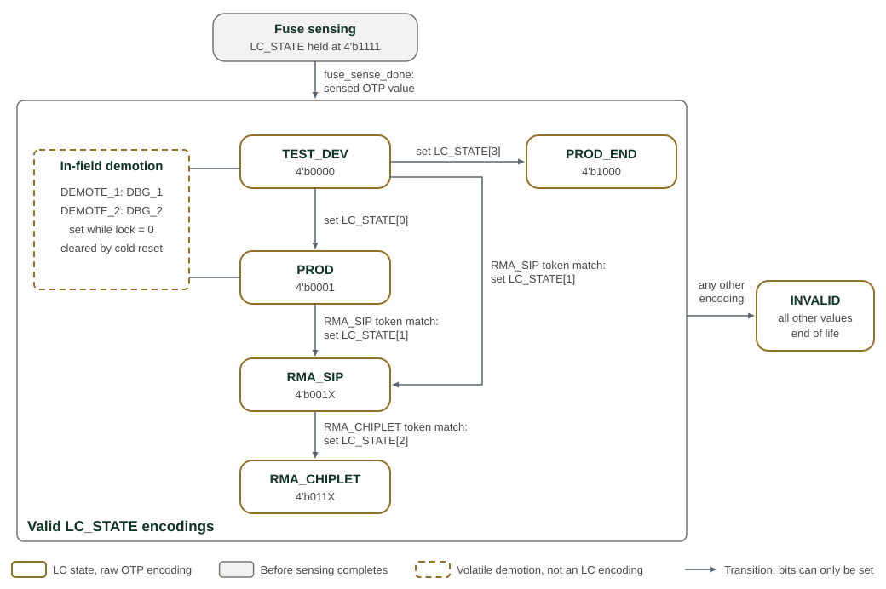
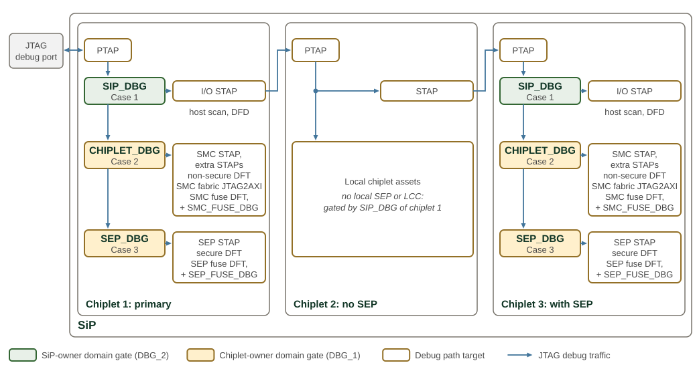

Life Cycle Controller (LCC)
The Life Cycle Controller (LCC) converts the OTP lifecycle state and owner
restrictions into feat_ctrl_o, the 64-bit vector that enables debug and
functional features. Two volatile demotion controls can change the debug
profile for the current boot without changing OTP.
The OTP controller supplies LC_STATE, SIP_DIS and SYS_DIS after fuse
sensing. The LCC checks the differentially encoded state and disables features
on an integrity error, except when the final SEC_DIS override forces them on.
Downstream logic uses these outputs to gate debug, test and functional paths.
The sections below explain states and security domains, feature-control rules, demotion, scan protection and firmware authorization. Hardware gating is implemented; the multi-owner signing model in Firmware Authorization is a deferred firmware design. Do not use that model as a description of current ROM verification.
SEP lifecycle controller shows a high-level view of the Life Cycle Controller components.

In SEP lifecycle controller, the inputs enter on the left and the
outputs leave on the right, each labelled with its consumer. u_lc_state_dec
decodes the differentially encoded LC_STATE from the eFuse shadow registers and
raises lc_sigint_err on a non-complementary codeword, which forces the feature
control decode to all zeros. While security_disable_i is high, the
multiplexer replaces the decoded vector with all ones, even on an integrity
error. The lc_sigint_err line crosses the security_disable_i line without
connecting; the gap marks the crossing.
The debug and DFT disable derivation turns the sip_debug, chiplet_dbg,
sep_debug, sep_fuse_dbg and smc_fuse_dbg bits of the result into the 11
debug disables for the DTP and the two fuse DFT disables. No functional logic
consumes the fuse DFT disables; they leave the SMU for adopter DFT insertion.
The demote and lock bits of DEMOTE_1 and DEMOTE_2 are set-only: firmware
can set demote only while lock is clear, and both hold until SEP cold
reset. The demote bits feed the feature control decode and, through the
differential encoders, the Key Manager and the SEP outputs.
1. Lifecycle States
The LCC decodes the OTP controller’s LC_STATE shadow output; it does not
sequence lifecycle transitions itself. Before fuse sensing completes, that
output holds INVALID (4’b1111). The LCC then follows the sensed state and
its feature-control profile.
The raw four-bit OTP value is carried as a complementary code in the shadow
path. A failed integrity check sets lc_sigint_err and forces the base feature
vector to zero. SEC_DIS is applied afterward and can override that result;
see Overrides and Final Gates (SEC_DIS).
Hardware orders the RMA token transitions: RMA_SIP_TOKEN first admits
RMA_SIP, then RMA_CHIPLET_TOKEN admits RMA_CHIPLET. Volatile demotion is
separate from those transitions and does not change the OTP state.
Key Manager includes DEMOTE_1/2 with CHIPLET_UID, SIP_UID, SYS_UID and LC_STATE in key derivation, separating demoted-state keys from non-demoted production keys.
SEP lifecycle state machine shows the lifecycle states and transition paths.

Each rounded box in SEP lifecycle state machine is a lifecycle state with its raw OTP encoding, where X marks a bit that does not change the state. LC_STATE bits can only be set, so each arrow names the bit that it sets. Setting LC_STATE[1] requires an RMA_SIP token match. Setting LC_STATE[2] requires an RMA_CHIPLET token match and a state that already has LC_STATE[1] set. Every other encoding is INVALID and permanent: for example, setting LC_STATE[3] in any state other than TEST_DEV, or setting any further bit in PROD_END. Before fuse sensing completes, the shadow output holds the INVALID encoding 4’b1111. The dashed box is the volatile demotion overlay, which acts in TEST_DEV and PROD without changing the encoding.
SEP lifecycle state encodings lists the raw OTP encodings. The complementary shadow encoding is a transport integrity check, not an additional lifecycle state.
| LC State Name | Encoding | Description |
|---|---|---|
TEST_DEV |
4’b0000 |
Default silicon state at manufacturing time. The chip is open for ATE/SLT testing, fuse provisioning, and mission-mode software development, with certain chiplet features disabled as defined by the chiplet creator, the SiP owner, and the system owner. In this state, the hash digests of the secret tokens (RMA_CHIPLET_TOKEN and RMA_SIP_TOKEN) are programmed into OTP by the chiplet creator and the SiP owner, respectively. The disable vectors (SIP_DIS and SYS_DIS) are likewise programmed into OTP by the chiplet creator and the SiP owner. |
PROD |
4’b0001 |
Product functioning state. In-field debug is enabled by the volatile DEMOTE_1 / DEMOTE_2 registers (not a separate LC encoding): DEMOTE_1 opens the local debug group (DBG_1) and DEMOTE_2 opens the inter-chiplet debug-bypass group (DBG_2). |
PROD_END |
4’b1000 |
Terminal product state; the only permitted transition is to INVALID. This state is entered from TEST_DEV for special use cases in which RMA is not allowed. |
RMA_SIP |
4’b001X |
Enables the SiP owner to debug and test the part. The secret token (RMA_SIP_TOKEN) must be presented to enable the transition from PROD or TEST_DEV. |
RMA_CHIPLET |
4’b011X |
Enables the chiplet owner to debug and test the part. All features are enabled (neither SIP_DIS nor SYS_DIS applies), unlike TEST_DEV, which still honors SIP_DIS/SYS_DIS. The secret token (RMA_CHIPLET_TOKEN) must be presented to enable the transition from RMA_SIP. |
INVALID |
All other values |
Disables all features unless SEC_DIS overrides it. Also used before fuse sensing completes; observing this profile alone does not establish that the OTP has been programmed to an end-of-life state. |
2. Multiple Security Domains
The SiP owner controls the debug-access network between chiplets. Each chiplet owner controls access to its own local assets. A system has one shared SiP-owner domain and a local domain for each chiplet with independently protected assets.
SIP_DBG admits and forwards external debug traffic at each chiplet with a
local SEP/LCC. Access to local resources additionally requires CHIPLET_DBG;
SEP resources also require SEP_DBG. Opening another chiplet’s local debug
gate is unnecessary when traffic only passes through it.
A chiplet without a local SEP/LCC contributes no local disable vector. The preceding LCC-bearing chiplet controls forwarding to it, as described in Non-Primary Chiplets.

In SEP security domains, each chiplet with a SEP gates the debug
path from its PTAP downwards: SIP_DBG opens the Case 1 targets, CHIPLET_DBG adds
the Case 2 targets and SEP_DBG adds the Case 3 targets, each listed to the right
of its gate. The targets are the debug paths that sep_lifecycle_ctrl disables
through dbg_disable_o and the two fuse DFT disables, as given in
Debug and Test Port Path Gating; the fuse DFT paths also need their own SEP_FUSE_DBG or
SMC_FUSE_DBG bit. The green gate belongs to the SiP-owner domain and is a DBG_2
bit, opened in the field by Demotion 2. The cream gates belong to the
chiplet-owner domain and are DBG_1 bits, opened by Demotion 1. The I/O STAP
forwards the chain to the next chiplet’s PTAP.
In SEP security domains, chiplet 1 is primary, chiplet 2 has no SEP, and chiplet 3 has its own LCC:
-
Chiplet 1 local debug requires
SIP_DBG(1)andCHIPLET_DBG(1). -
Chiplet 2 access requires
SIP_DBG(1); chiplet 2 adds no local gate. -
Chiplet 3 local debug requires
SIP_DBG(1),SIP_DBG(3)andCHIPLET_DBG(3). It does not requireCHIPLET_DBG(1).
The per-path conjunctions are listed in Debug and Test Port Path Gating.
3. Debug and Functional Feature Control
feat_ctrl_o uses positive logic: 1 enables a feature. The 64-bit
SIP_DIS and SYS_DIS shadows use negative logic: 1 restricts a feature.
The applicable masks depend on lifecycle state and demotion. Where both
apply, the enable is ~(SIP_DIS | SYS_DIS).
Per-LC-state feature control profile gives the complete state-dependent formulas.
The final SEC_DIS override is described in Overrides and Final Gates (SEC_DIS).
3.1. Disable Vector Format (SIP_DIS / SYS_DIS)
SEP feature-disable vector defines the disable vector format — the bit layout shared by both SIP_DIS and SYS_DIS (each is 64 bits). Each defined bit gates a specific feature or its associated scan chain; the remaining bits are reserved for adopter extension (see Asset and Scan-Chain Protection and Adopter Extension).
In the policy tables, T means enabled and F means disabled.
A clear disable bit permits a feature only where the lifecycle profile
allows it; it does not by itself open a production debug path.
DBG_1 covers [23:0] and is controlled by Demotion 1. DBG_2 covers [47:24]
and is controlled by Demotion 2. Function bits occupy [63:48].
| DIS bit index | Feature Category | Feature Name | Feature Description (1’b1 disables the feature; 1’b0 enables it) |
|---|---|---|---|
0 |
debug (DBG_1) |
SEP_DBG |
Coarse-grained debug enable for the SEP scope: the local gate for SEP internal state. |
1 |
debug (DBG_1) |
CHIPLET_DBG |
Coarse-grained debug enable for the chiplet scope. |
2 |
debug (DBG_1) |
SEP_FUSE_DBG |
|
3 |
debug (DBG_1) |
SMC_FUSE_DBG |
|
4-23 |
debug (DBG_1) |
Reserved |
Available for adopter-defined local (DBG_1) debug scan chains. See Adopter Extension. |
24 |
debug (DBG_2) |
SIP_DBG |
Coarse-grained debug enable for the SiP scope: the inter-chiplet debug-bypass gate (DBG_2, gated by Demotion 2) that admits external (PTAP) debug traffic into this chiplet and forwards it onward to the next chiplet via the outbound JTAG PTAP. Debugging a chiplet’s assets requires SIP_DBG enabled on each LCC-bearing chiplet along the debug path, including the target itself when it has its own LCC; chiplets without a local SEP/LCC contribute no gate (see Multiple Security Domains). |
25-47 |
debug (DBG_2) |
Reserved |
Available for adopter-defined inter-chiplet debug / DFT forwarding paths. Each allocated bit is consumed on the LCC-bearing chiplet to gate the corresponding traffic before it is forwarded downstream. See Adopter Extension. |
48-63 |
function |
Reserved |
Available for adopter-defined functional feature gating. See Adopter Extension. |
3.2. DIS Vector Ownership: Predecessor-Programs-Disables
The vector name identifies the receiving owner, not the programmer:
-
The chiplet creator programs
SIP_DISbefore SiP handoff. Its restrictions remain effective in RMA_SIP and are bypassed in RMA_CHIPLET. -
The SiP owner programs
SYS_DISbefore system handoff. Its restrictions are bypassed in RMA_SIP and RMA_CHIPLET.
RMA bypass does not erase either fuse vector. The system owner has no
successor and therefore no third disable vector. It provisions its own
SYS_PUBK_HASH and SYS_UID before TEST_DEV-to-PROD transition; see the
OTP Fuse Controller chapter for the provisioning sequence.
3.3. Combining Rule: OR then Invert
Where both owner masks apply, a feature is disabled if either mask has its bit set. OR combines the restrictions; inversion produces the positive-logic enable. Since an OTP bit can only change from 0 to 1, a later owner cannot erase an earlier owner’s programmed restriction. Lifecycle profiles can bypass masks for RMA access without changing OTP.
3.4. When Each DIS Vector Applies
The table below gives mask applicability before demotion and the final overrides. In TEST_DEV, demotion can bypass the masks for its debug group; in PROD, demotion opens that group only subject to both masks. See Per-LC-state feature control profile for those exceptions.
SEP disable-vector applicability identifies which disable vectors apply in each lifecycle state.
| LC state | Applicable DIS vectors |
|---|---|
TEST_DEV |
Both SIP_DIS and SYS_DIS apply. TEST_DEV is the shared phase the part passes through under the chiplet creator, SiP owner, and system owner in turn. |
PROD / PROD_END |
Both SIP_DIS and SYS_DIS apply. |
RMA_SIP |
Only SIP_DIS applies. At the SiP-owner level, the SiP owner sits above the system owner, so its own SYS_DIS — which restricts the system owner — does not bind it; only the chiplet creator’s SIP_DIS restriction remains in force. |
RMA_CHIPLET |
Neither SIP_DIS nor SYS_DIS apply (all features enabled). |
INVALID |
Neither applies (all features disabled by fail-closed default). |
(any) with SEC_DIS = 1 |
Neither DIS vector applies (all features enabled). |
3.5. Overrides and Final Gates (SEC_DIS)
Two controls sit on top of the per-LC-state / DIS-vector computation, applied in this order (a later step overrides an earlier one):
-
Signal-integrity fail-closed (base): if the differentially encoded LC_STATE fails its integrity check (
lc_sigint_err), the basefeat_ctrlis forced to all-0s (all features disabled). -
SEC_DIS override: when
SEC_DIS = 1,feat_ctrlis forced to all-1s — every feature enabled, regardless of the LC state, the DIS vectors, or the sigint result (an emergency bring-up bypass on A0 silicon; see the Security Disable section).
SECURE_TM is not a term in feat_ctrl_o. No feature control bit is qualified
by secure test mode: the debug group [47:0] and the function group [63:48]
are both determined solely by the LC state, the DIS vectors, and the SEC_DIS
override. secure_tm acts on the scan path and on the fuse controller rather
than on feature control — see secure_tm and the Secure Scan Chain.
3.6. Per-LC-state Feature Control Profile
The output is shown as DBG_1 / DBG_2 / Function. T enables all bits of a
group; F disables them. A formula applies the indicated disable masks.
Demotion has no effect on Function.
| LC_STATE | SEC_DIS | DEMOTE (1 / 2) | Feature Control: \{DBG_1 / DBG_2 / Function} | Description |
|---|---|---|---|---|
TEST_DEV (4’b0000) |
0 |
0 / 0 |
~(SIP_DIS.DBG_1 | SYS_DIS.DBG_1) / ~(SIP_DIS.DBG_2 | SYS_DIS.DBG_2) / ~(SIP_DIS.FUNC | SYS_DIS.FUNC) |
ATE/SLT test, fuse provisioning (SIP_DIS / SYS_DIS and the RMA tokens), and product firmware development. Both SIP_DIS and SYS_DIS apply; a demotion forces its debug group open, overriding the DIS vectors. Function is not affected by demotion. |
0 |
1 / 0 |
T / ~(SIP_DIS.DBG_2 | SYS_DIS.DBG_2) / ~(SIP_DIS.FUNC | SYS_DIS.FUNC) |
||
0 |
0 / 1 |
~(SIP_DIS.DBG_1 | SYS_DIS.DBG_1) / T / ~(SIP_DIS.FUNC | SYS_DIS.FUNC) |
||
0 |
1 / 1 |
T / T / ~(SIP_DIS.FUNC | SYS_DIS.FUNC) |
||
1 |
X |
T / T / T |
||
PROD (4’b0001) |
0 |
0 / 0 |
F / F / ~(SIP_DIS.FUNC | SYS_DIS.FUNC) |
Product state. A demotion relaxes its debug group to honor the DIS vectors (one level down from disabled). Both SIP_DIS and SYS_DIS still apply; Function is not affected by demotion. |
0 |
1 / 0 |
~(SIP_DIS.DBG_1 | SYS_DIS.DBG_1) / F / ~(SIP_DIS.FUNC | SYS_DIS.FUNC) |
||
0 |
0 / 1 |
F / ~(SIP_DIS.DBG_2 | SYS_DIS.DBG_2) / ~(SIP_DIS.FUNC | SYS_DIS.FUNC) |
||
0 |
1 / 1 |
~(SIP_DIS.DBG_1 | SYS_DIS.DBG_1) / ~(SIP_DIS.DBG_2 | SYS_DIS.DBG_2) / ~(SIP_DIS.FUNC | SYS_DIS.FUNC) |
||
1 |
X |
T / T / T |
||
PROD_END (4’b1000) |
0 |
— |
F / F / ~(SIP_DIS.FUNC | SYS_DIS.FUNC) |
Terminal product state — normal function only; the only permitted transition is to INVALID. Demotion has no effect. |
1 |
— |
T / T / T |
||
RMA_SIP (4’b001X) |
0 |
— |
~SIP_DIS.DBG_1 / ~SIP_DIS.DBG_2 / ~SIP_DIS.FUNC |
SiP-owner debug/test. Honors SIP_DIS only (SYS_DIS does not bind the SiP owner). Entered via RMA_SIP_TOKEN. Demotion has no effect. |
1 |
— |
T / T / T |
||
RMA_CHIPLET (4’b011X) |
X |
— |
T / T / T |
Chiplet-owner debug/test — all features enabled. Entered via RMA_CHIPLET_TOKEN. |
INVALID (others) |
0 |
— |
F / F / F |
The chip is not live: end of life, immediately after reset, or an invalid LC_STATE. |
1 |
— |
T / T / T |
In the DEMOTE column, a dash means the state ignores demotion; X means SEC_DIS makes its value irrelevant. The two demotions act independently.
4. In-Field Debug Demotion
DEMOTE_1 and DEMOTE_2 each contain a demote bit and a lock bit.
They are two registers, not separate demotion and lock register banks.
Cold reset clears both and removes the volatile debug profile.
| Register | Feature group | Scope |
|---|---|---|
|
DBG_1, bits |
Local debug, including SEP and chiplet gates. |
|
DBG_2, bits |
Inter-chiplet debug access and forwarding, including |
The controls are independent: either may be set first or used alone. In TEST_DEV, demotion forces its group open; in PROD, it enables the group subject to the disable vectors. Other lifecycle profiles and function bits are unchanged. The complete formulas are in Per-LC-state feature control profile.
Opening local debug does not open the external access path. For example, a Case 3 SEP debug path requires both groups; see Debug and Test Port Path Gating. The LCC applies register values without authenticating the writer or a manifest. Firmware authorization is discussed under Firmware Authorization.
4.1. Programming and Locking
Both demote (bit 0) and lock (bit 1) are write-one-to-set fields.
Writing zero does not clear them. While lock is zero, firmware can set
demote; once locked, the demotion decision cannot change until cold reset.
The lock can commit either a demoted or a non-demoted state. The
demotion sequence
is in the Programmer’s Guide.
This is the hardware mechanism. The current ROM’s manifest handling is documented in the Boot ROM chapter; the multi-owner authorization model above remains deferred.
4.2. Reset Behavior
SEP cold reset clears the demote and lock fields in both registers.
The LCC then applies the profile of the sensed OTP state without demotion.
5. Asset and Scan-Chain Protection
Two distinct DFT operations use the scan chains, and the protection model treats them differently:
-
Scan test — shift in a test pattern, run the functional clock for one or two cycles, then shift the result out. Used for manufacturing / DFT coverage.
-
Scan dump — shift the live internal state out directly. Used for debug.
The integration must preserve test coverage without exposing live secrets. The rules below define the required scan partitioning and command gates; feature-vector generation alone does not implement or verify DFT insertion.
5.1. Asset Classes
SEP assets are partitioned into three classes. Class 1 (non-scannable) and Class 2 (scannable for test coverage but never scan-dumpable) are each split by protection rationale — a for confidentiality and b for integrity. Class 3 is everything else.
SEP security asset classes relates the asset classes to scan and scan-dump treatment.
| Class | Asset Examples | Scannable (test) | Scan-dumpable (debug) | Gate & Scan-Chain Treatment |
|---|---|---|---|---|
1a |
UIDs ( |
No |
No |
Excluded from all scan chains. Confidentiality rationale: these registers hold the actual secrets; the data lives in them, so the only safe option is to keep them off every scan chain. |
1b |
|
No |
No |
Excluded from all scan chains. Integrity rationale: the values are not secret (digests are SHA-256 preimage-resistant), but scan shifting could change them and illegitimately enable a disabled feature or make an attacker-presented token match. Stability against scan-induced perturbation is required. |
2a |
The complete Key Manager; AES, HMAC-SHA2, KMAC-SHA3, OTBN, entropy, DRBG/EDN, Adams Bridge, and TRNG sequential state; KM/OTBN companion SRAMs (see Class 2 Asset Manifest and Naming) |
Yes |
Never |
Dedicated secure scan chain. Reachable when its SIB is opened by the
|
2b |
Fuse programming control MMRs and status MMRs of the SEP fuse controller |
Yes |
Never |
Dedicated secure scan chain, alongside Class 2a, under the same command-class
rule. Integrity rationale: shifting is not read-only with respect to the flops
it passes through. During a dump every flop in the chain takes on a succession of
arbitrary transient values, so a program-control register on a dumpable chain
would pass through the encoding for "program" during an ordinary dump, and the
dump itself could burn fuses. Status registers are included because spoofed
status can steer the program sequencer. Class 2 rather than Class 1 so the fuse
controller keeps manufacturing defect coverage; at |
3 |
The rest of the logic not classified above |
Yes |
Yes (gated) |
General scan chains. Scannable and scan-dumpable when permitted by the |
5.2. secure_tm and the Secure Scan Chain
secure_tm is the secure-test-mode indicator: the TEST_EN strap latched into
the internal SECURE_TM signal. It is latched when SEP fuse sensing completes
if SEC_DIS is not asserted, or on chiplet cold-reset release if SEC_DIS is
asserted (see the Test Mode section).
secure_tm establishes the required test configuration; it does not identify
or authenticate the owner at the JTAG port. The protection rules require it to:
-
Admit test commands on the secure chain only while asserted.
-
Block updates to
LOCKS,LC_STATE,SIP_DISandSYS_DISfrom SEP, OTP, JTAG and TRoot while the part is shiftable. -
Hold OTP write-enable inputs inactive.
-
Disconnect UID and
CLASS_KEYshadow outputs from downstream consumers.
Secure-chain access requires both an open SIB, under the feature gates in
Debug and Test Port Path Gating, and an allowed command. Test commands require
secure_tm = 1; dump commands are never allowed, for any owner or lifecycle
state. With secure_tm = 0, no command is admitted on that chain.
These conditions distinguish Class 1 from Class 2. Class 1 registers contain secrets or state that directly controls protection, so they are excluded from scan. Class 2 consumers and fuse-program controls may be scanned only with their secret sources disconnected and the fuse-write path blocked. The feature bits control reachability; they do not waive these command rules.
The adopter’s DFT implementation must enforce this separation. General
Class 3 chains follow their debug gates and do not use secure_tm as an
additional gate.
5.3. Feature-Bit to Scan-Chain Mapping
Each general (Class 3) scan chain is gated by a per-scope *_DBG
feature control bit in feat_ctrl_o; the bit’s owner — which predecessor DIS
vector sets its default (see DIS Vector Ownership: Predecessor-Programs-Disables) — sets the multi-owner
default policy. External access to any general chain additionally requires the
SIP_DBG debug-access path into the chiplet to be open (see
Multiple Security Domains). The Class 2 secure chain is reached through its
own SIB, which the feature control bits gate in the same way; what distinguishes
it is that reaching it never permits a dump, because the DFT controller admits
only test commands there and only while secure_tm = 1.
SEP scan-chain gates maps each asset class to its scan chain and dump gate.
| Asset Class | Scan Chain | Dump Gate | Notes |
|---|---|---|---|
1a / 1b (non-scannable) |
— |
— |
Excluded from all scan chains. |
2a (secret-bearing) + 2b (fuse program path) |
Shared dedicated secure chain |
Command class — a dump command is never admitted; a test command requires
|
Never scan-dumpable, any owner / LC state. Its SIB is feature-bit gated like any other chain, but opening it grants test access only — with the shadow secrets disconnected (2a) and the OTP write-enables tied inactive (2b). |
3 (general logic) |
Per-scope general chains |
Local scope |
Coarse-grained: a scope’s general logic is scan-dumpable only when its local |
Reserved-bit ranges available for adopter-defined scan chains (see Adopter Extension):
-
Debug group: bits 4-23 (DBG_1, 20 reserved bits) and bits 25-47 (DBG_2, 23 reserved bits)
-
Function group: bits 48-63 (16 reserved bits)
5.4. Debug and Test Port Path Gating
DTP reachability uses three nested combinations of feature bits. A granular fuse-debug bit adds another AND term; it never replaces the case’s required bits.
DTP access cases defines the three cases used to determine debug-path access.
| Case | Condition | Applies to |
|---|---|---|
1 |
|
Paths that only enter or traverse the chiplet without reaching chiplet-internal resources. |
2 |
|
Paths reaching chiplet-internal resources. |
3 |
|
Paths reaching the SEP or the secure domain. |
Case 1 admits traffic, Case 2 reaches chiplet resources, and Case 3 reaches SEP resources. Every bit in the applicable case must be enabled. For example, leaving SEP_DBG open while CHIPLET_DBG is closed does not grant SEP access.
DTP path feature gates lists the feature-control terms required for each DTP path.
| DTP path | Gating | Notes |
|---|---|---|
I/O S-TAP host path |
Case 1 |
|
External S-TAP return path |
Case 1 |
Onward forwarding to a downstream chiplet is part of the SiP-owner domain (see Multiple Security Domains). |
DFD iJTAG path |
Case 1 |
|
SMC debug S-TAP host path |
Case 2 |
No dedicated SMC debug bit exists; see the note below. |
DTP configurable (extra) S-TAP host paths |
Case 2 |
|
Non-secure external DFT iJTAG path |
Case 2 |
The DFT non-secure chain SIB. Not
gated by |
SMC fabric JTAG2AXI path |
Case 2 |
|
SEP debug S-TAP host path |
Case 3 |
Requires the full Case 3 conjunction;
|
Secure external DFT iJTAG path |
Case 3 |
The DFT secure chain SIB. Reaching it
grants test access only, under the command-class rule of
|
DFT-inserted SEP fuse path |
Case 3 |
Includes the OTP IP-vendor test and calibration interface, which is reachable only over this path. |
DFT-inserted SMC fuse path |
Case 2 |
|
SEP OTP JTAG2AXIL path |
Ungated |
Reaches the whole SEP eFuse interface: the
shadow register map, the token-input MMRs, and the eFuse interface control
registers, fuse program and read controls included. No feature control bit gates
it. Enforcement is per-field |
SMC OTP JTAG2AXIL path |
Ungated |
Reaches the whole SMC eFuse interface on the
same terms, under a stricter access policy. SMC holds no |
Case 3 spans both demotion groups: SEP_DBG and CHIPLET_DBG are in DBG_1, while SIP_DBG is in DBG_2. In PROD, enabling only one demotion leaves a Case 3 path closed.
There is no separate SMC_DBG bit. SMC debug shares Case 2, so opening CHIPLET_DBG also admits SMC debug when SIP_DBG is open. A separate SMC policy would require an adopter-defined bit and corresponding path gating.
6. Non-Primary Chiplets
Primary chiplets always include a local SEP and LCC; the asset partitioning described in Asset and Scan-Chain Protection applies directly. Non-primary chiplets may not include a local SEP, in which case debug access is governed by the SiP-owner domain. The primary chiplet’s SiP-owner feature control gates the DFT traffic before forwarding it to the non-primary chiplet (see Multiple Security Domains).
For non-primary chiplets, the adopter is responsible for:
-
Identifying which non-primary chiplet assets require protection.
-
Partitioning those assets across scan chains analogous to the class scheme in Asset Classes (1a/1b, 2, 3).
-
Routing the non-primary chiplet’s scan / DFT traffic through the appropriate DTP path on the primary chiplet, where SiP-owner feature control gates forwarding.
-
Applying the same scan-protection treatment to any non-primary chiplet logic that handles secrets: Class 1 excluded from scan chains, Class 2 never scan-dumpable.
The SIP_DBG mechanism documented in
Disable Vector Format (SIP_DIS / SYS_DIS) gates the DTP path on the primary
chiplet. The primary LCC therefore governs debug access to a non-primary
chiplet by controlling whether DFT traffic is forwarded to it.
7. Adopter Extension
If an adopter integrates SEP into a chiplet with assets that require
their own scan-chain protection — assets not covered by the
chiplet-scope SEP scan chain or the general-logic scan chain in
Asset and Scan-Chain Protection — the LCC architecture
accommodates this via the reserved bits in feat_ctrl_o (and the
matching positions in SIP_DIS / SYS_DIS):
-
Debug group: bits 4-23 (DBG_1, 20 reserved bits) and bits 25-47 (DBG_2, 23 reserved bits)
-
Function group: bits 48-63 (16 reserved bits)
OCAH assigns no standard function to these reserved bits. An adopter may allocate a DBG_2 bit to an additional inter-chiplet DFT forwarding path; the bit is consumed on the LCC-bearing chiplet to gate the corresponding traffic before it is forwarded downstream.
Each new scan chain or forwarding path is gated by exactly one reserved bit. The corresponding bit position in SIP_DIS or SYS_DIS (chosen by which predecessor owner sets the default policy — see DIS Vector Ownership: Predecessor-Programs-Disables) determines the default OTP-programmed restriction.
Constraints any adopter extension must satisfy:
-
One feature control bit per scan chain.
-
Asset-class compliance. Secret-bearing fields used by the new chain must follow the asset-class scheme (see Asset and Scan-Chain Protection): actual secrets and integrity-critical state are excluded from scan chains (Class 1). A Class 2 chain must never admit a dump command. It may admit test commands only while
secure_tm = 1, with secret sources disconnected and fuse programming blocked as specified above. The chain’s feature-control bit controls reachability; it does not authorize a dump. -
Per-LC-state policy. The new bit follows the standard per-LC-state formulas for its group (see Per-LC-state feature control profile). DBG_1 and DBG_2 are disabled in undemoted PROD and in PROD_END; their respective demotion controls relax PROD to honor the disable vectors. Function bits continue to honor
~(SIP_DIS.FUNC | SYS_DIS.FUNC)in both production states and are unaffected by demotion. All groups follow their listed TEST_DEV and RMA policies and the SEC_DIS override.
| The specific bit-allocation convention — which reserved bits are reserved for which adopters, and how bit assignments are advertised in the RDL / package outputs — is currently open and will be defined in a future revision of this specification. |
8. Firmware Authorization
The LCC does not inspect
manifests or signatures. It supplies the lifecycle state, and the OTP Fuse
Controller chapter defines the fuse fields that govern firmware authorization:
SBOOT_DIS, the SIP_DIS and SYS_DIS debug vectors, the public-key digests, CHIPLET_PUBK_REVOKE, and the REQUIRED_SIGNERS and
REQUIRED_ALGS fields reserved for a deferred multi-owner signing model.
Firmware, not the LCC, interprets them. The SEP Boot ROM reads CHIPLET_DBG
from the SIP_DIS and SYS_DIS fuse shadows rather than from FEAT_CTRL,
because SEC_DIS and demotion can force FEAT_CTRL open on a part whose fuses
disable debug.
The
Secure Boot Decision
section of the SEP Boot ROM appendix in the Programmer’s Guide specifies when
the ROM requires a verified manifest, including the rule that a debug-locked
TEST_DEV or RMA_SiP part is treated as PROD. The
SiP Secure Boot application note
summarizes that decision and describes the multi-owner model, which the
current ROM does not implement, under
deferred multi-owner signing model
there.
9. Memory Map and Register Reference
9.1. Memory Map
Register offsets are relative to the block base in the subsystem memory map. The detailed map below defines each register and its fields.
9.2. Detailed Register Map
SEP Lifecycle Control Address Map
Lifecycle feature-control and demotion registers with their associated locks.
Register List:
| Address | Name | Access | Description |
|---|---|---|---|
| 0x0 | FEAT_CTRL | R | - |
| 0x8 | DEMOTE_1 | RW | - |
| 0x10 | DEMOTE_2 | RW | - |
Register Details:
FEAT_CTRL
| Bits | Field | Access | Reset | Description |
|---|---|---|---|---|
| 63:0 | feature_control | R | 0x0 | Lifecycle feature control bits, |
DEMOTE_1
| Bits | Field | Access | Reset | Description |
|---|---|---|---|---|
| 63:2 | rsvd | RW1S | 0x0 | Not used |
| 1 | lock | RW1S | 0x0 | Demote lock bit. Once locked, demote can no longer be changed |
| 0 | demote | RW1S | 0x0 | Demote bit to enter PROD_DBG state |
DEMOTE_2
| Bits | Field | Access | Reset | Description |
|---|---|---|---|---|
| 63:2 | rsvd | RW1S | 0x0 | Not used |
| 1 | lock | RW1S | 0x0 | Demote lock bit. Once locked, demote can no longer be changed |
| 0 | demote | RW1S | 0x0 | Demote bit to enter PROD_DBG state |